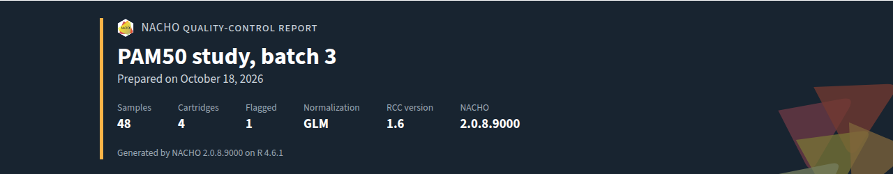
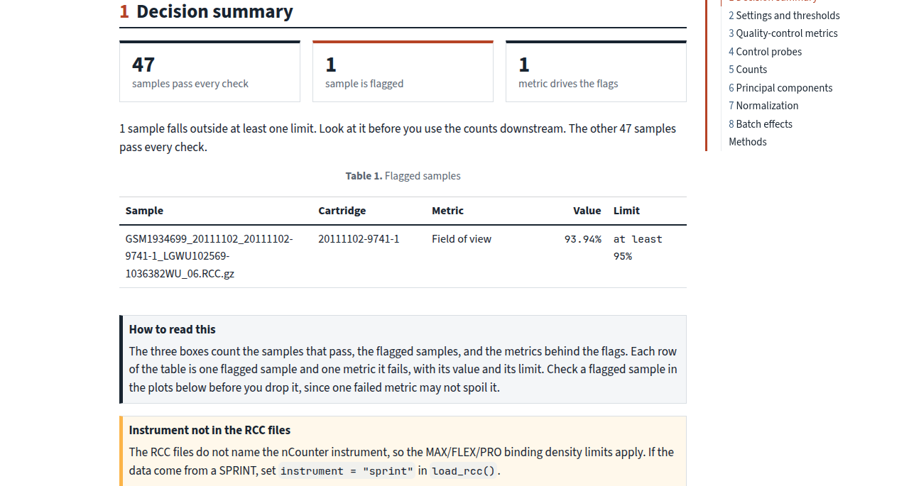
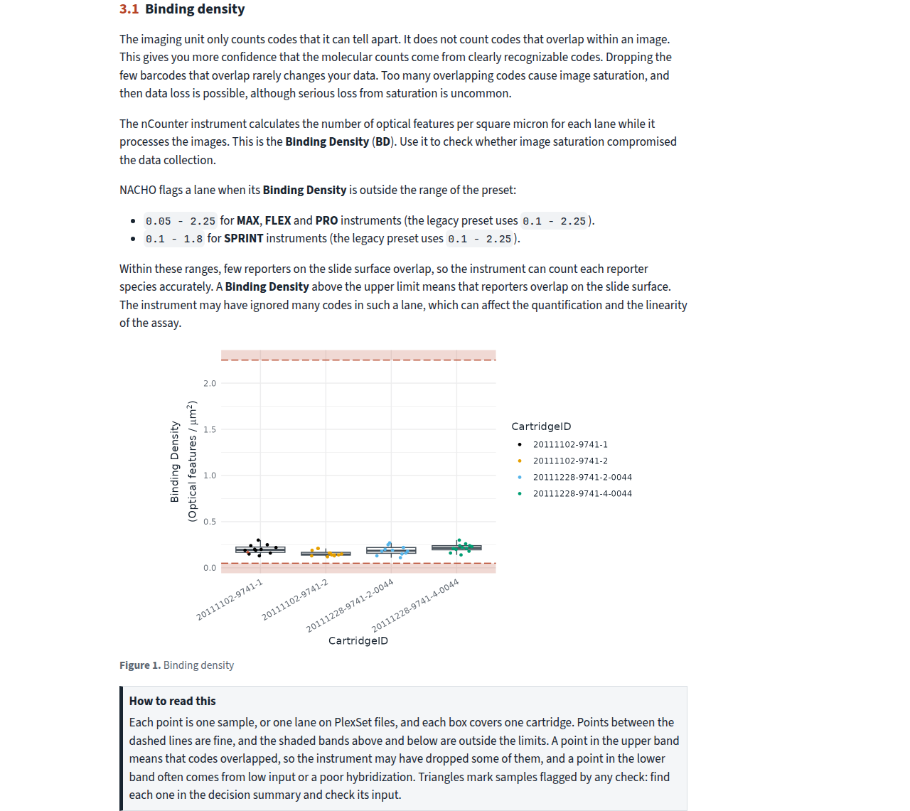
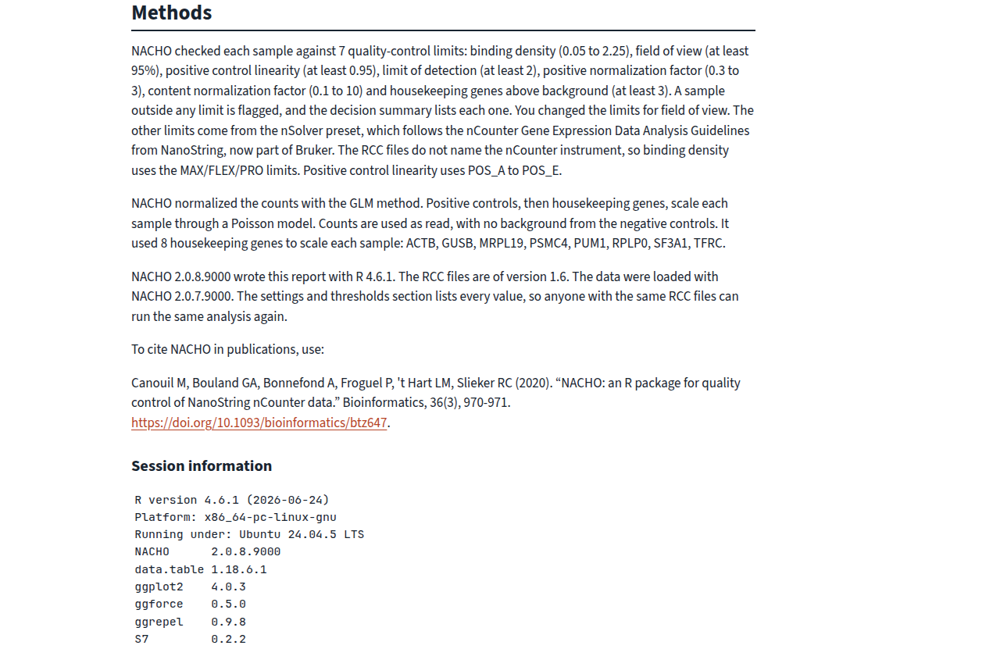
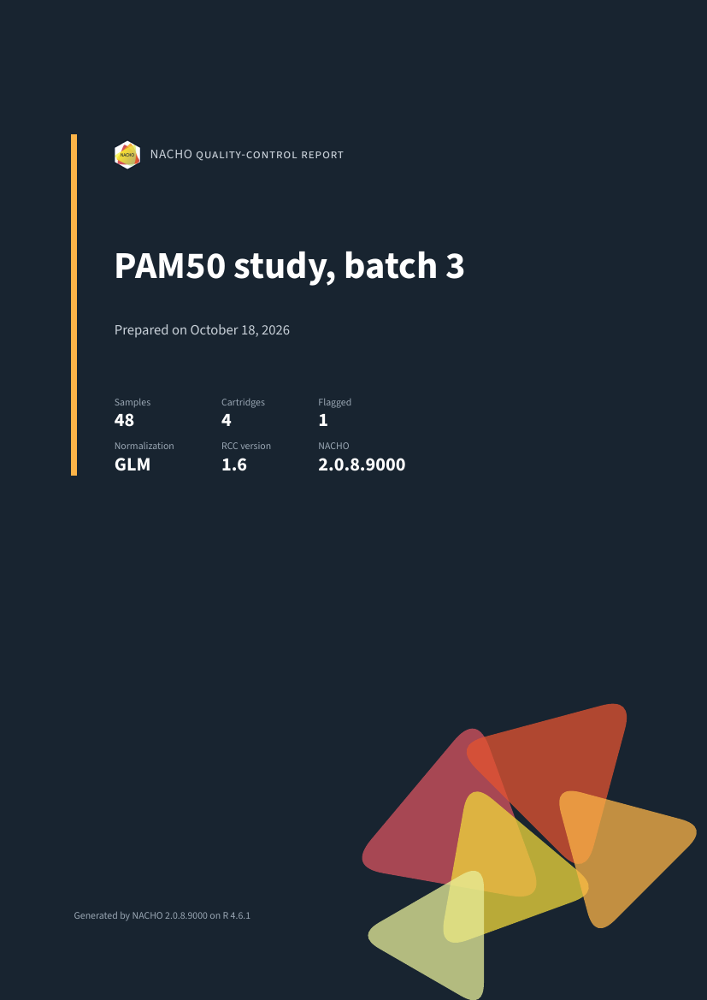
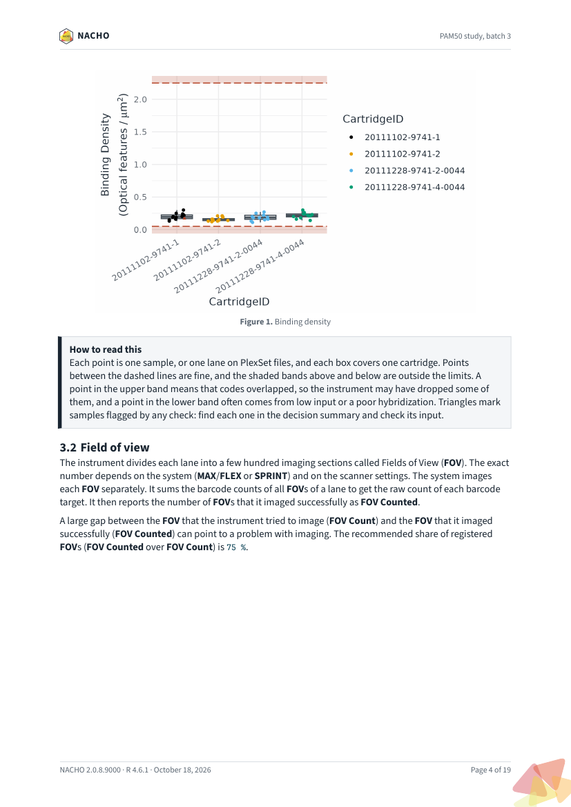

The render() function writes the quality-control report
of a nacho object. The report is one file, either a
self-contained HTML page or a tagged A4 PDF. The HTML file needs nothing
else to open, so you can email it or keep it with the data. The PDF goes
through Typst, which Quarto bundles, so you do not need LaTeX. Both
formats hold the same content, and this article shows a real report of
the example data GSE74821 in each. The example raises the
field-of-view limit to 95, so that one sample is flagged and the report
has something to show. The pictures come from a report that the website
build renders each time.
Create a report
Pass a nacho object to render(), and choose
the format with format. The call returns the path of the
report, invisibly.
library(NACHO)
render(
GSE74821,
format = "html",
output_dir = "reports",
title = "PAM50 study, batch 3",
author = "Jane Doe, Genomics Core"
)The main arguments are these.
-
xis thenachoobject fromload_rcc()ornormalise(). -
formatis"html"(the default) or"typst"for a PDF. -
output_diris the folder that receivesnacho-report.htmlornacho-report.pdf. NACHO creates the folder when it does not exist. -
titlereplaces the default title, “NanoString quality-control report”. -
authornames who prepared the report, and shows on the cover when you give it. -
groupis a column ofnacho_samples(x)with the biological groups. With a group, the report also checks whether batches and groups are confounded.
Other arguments, such as colour, size and
outliers_labels, change how the plots look.
?render lists all of them. Rendering needs the Quarto
command-line interface 1.9.18 or newer.
Cover and decision summary
The report opens with a cover that gives the title, the date, the number of samples and cartridges, the number of flagged samples, the normalisation method, the RCC version and the NACHO version. The decision summary follows. It lists every flagged sample with the metrics that failed, and then adds notes on how the data were processed. For example, a note tells you when the positive control model did not fit a sample. Under the table, a “How to read this” box explains the columns.


Settings and thresholds
A table lists each setting and limit that the report used. Every row gives the value, what it means and where it comes from, for example the nCounter guidelines or a choice that you made. A reader can tell which limits were the defaults and which were changed, without opening your code.
Figures and tables
Each figure and each table has a “How to read this” box under it. The box says what one point or one box stands for, which pattern is fine, and what to do when a pattern looks wrong. The sections follow the quality-control metrics, the control probes, the counts, the principal components, the normalisation and the batch effects.

Methods appendix
The report ends with a methods appendix. It gives the citation of NACHO, a description of the methods that the data went through, and the versions of R and of the packages that made the report. That makes the file a record that you can attach to a study, and that a colleague can reproduce.

The PDF
The PDF has the same sections, laid out on A4 pages with a cover page, a table of contents and running headers. It is tagged and declares PDF/UA-1, so screen readers can follow it. Quarto may warn that verapdf is not installed. The warning only means that Quarto skipped an extra validation step.


Further reading
Explore quality control in the app shows the app, which can also create the report. Analyse a GEO study loads and checks a public study from start to finish.